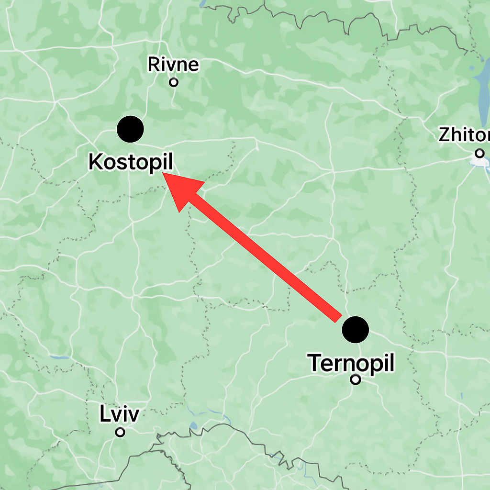

11 червня 2025
Сенсаційна новина! Росія зізналась чому атакує 4 РОКИ!
⚠️ УВАГА: ОСТРІЙ ПЕРЕХОВУЄТЬСЯ ВІД РАКЕТ ⚠️
Як стало відомо з джерел, усі ракетні атаки на Україну за останній рік мали спільну мету — Андрія Острого. За інформацією, кожна ракета прямувала винятково до нього. На фото видно, як головна ціль спокійно спить, не здогадуючись про масштаби операції.
🔥 ОСТРИЙ ЗНОВУ ЗНИК! ТЕРНОПІЛЬ ПІД ПІДОЗРОЮ 🔥
За оперативною інформацією, Андрій Острий проживає у Костополі, проте часто зникає у невідомому напрямку, найчастіше — у Тернопіль. Через це системи наведення не можуть точно його зафіксувати. Аналітики вважають, що саме ця мобільність робить його недосяжним для будь-яких ракет, навіть з GPS. На даний час аналітики і ТЦК з поліцією уже шукають його і встановлюють причину чому він так потрібен КГБ.
Очевидці підтверджують: «Він зникає неначе в тумані»